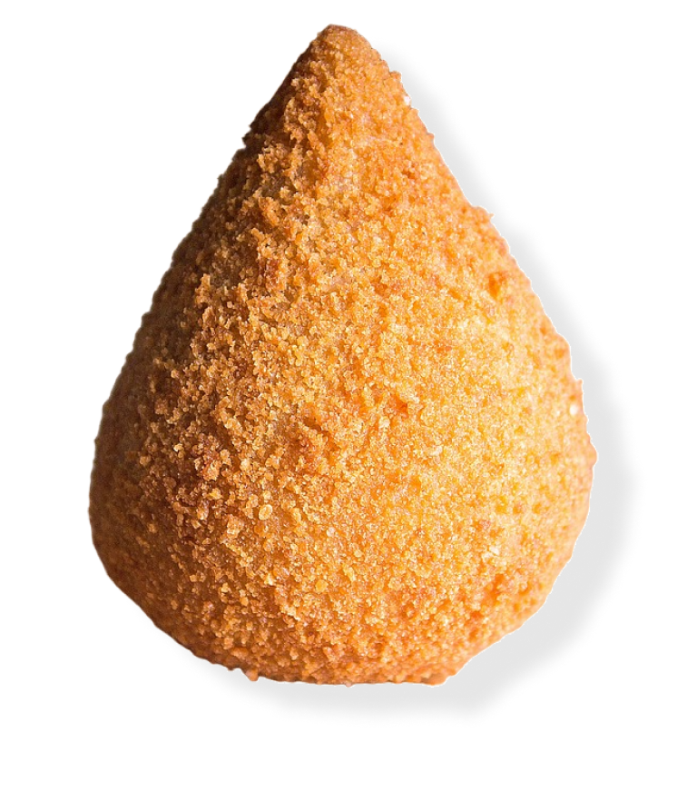

“Gostosa, nutritiva e deliciosa”
A chave da felicidade está na coxinha

Bateu a fome depois de um longo dia de trabalho? A coxinha é a solução para seus problemas.
Nada melhor que uma coxinha acompanhada de uma cerveja para bater papo depois de um longo dia de trabalho.

Aniversário sem coxinha não é aniversário, não é mesmo?
Uma coxinha, acompanhada de um refrigerante, hmmmm.
Quer saber mais? Mande uma mensagem abaixo que entraremos em contato